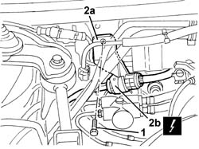
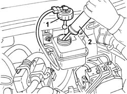
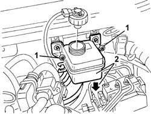
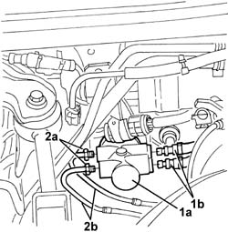
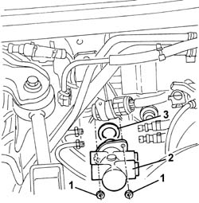
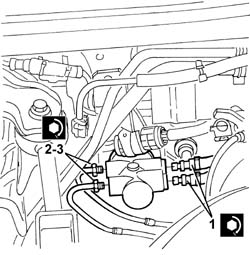
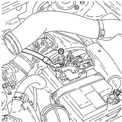
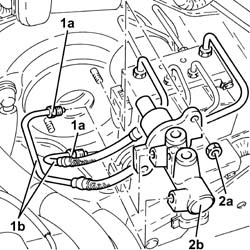
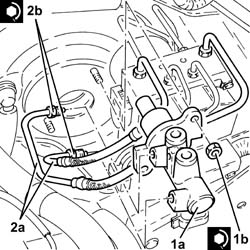

3330C10 (PUMP) - MASTER CYLINDER R.R.
- Path
- Procedures > 33 BRAKING SYSTEM > 3330 HYDRAULIC BRAKING SYSTEM > 3330C brake pump, reservoir and load proportioning valve > 3330C10 (PUMP) - MASTER CYLINDER R.R.
- Kind
- repair procedure (removal / refitting; the operation number is the code)
- Applies to
- engines: 1.6 TS, 2.0 TS, 1.9 JTD 8V, 1.9 JTD 16V; all production periods
- Interactive page
- https://sloeber94.github.io/elrnDB-a147/en/#/3025230
Applies to: engines: 1.6 TS, 2.0 TS; all production periods; only with equipment: Guida a destra
 Removing
Removing
 Refitting
Refitting1016A40 ignition coil cover on cylinder head- r+r
1008C10 power unit upper reaction link r r
4130B10 power steering fluid resevoir r r
1072D22 Air flow switching device control ACTUATOR - R.R. (2.0 engine)
1. Undo the bolt.
2. Move control unit bracket (2a) and disconnect electrical connection (2b).
 | Name | Connector |
|---|---|---|
2b | Pedal assembly join |

Applies to: engines: 1.6 TS, 2.0 TS; all production periods; only with equipment: Guida a destra
1. Undo the brake fluid reservoir cap.
2. Using a syringe, drain the brake fluid from the reservoir.

Applies to: engines: 1.6 TS, 2.0 TS; all production periods; only with equipment: Guida a destra
1. Undo the brake fluid reservoir bolts.
2. Lower the reservoir as far as possible so that the fluid in the pipes flows out, then draw off the brake fluid in the reservoir using a syringe.

Applies to: engines: 1.6 TS, 2.0 TS; all production periods; only with equipment: Guida a destra
1. Release pipes (1b) for connection to the brake fluid reservoir form master cylinder (1a) and use a cloth to collect any brake fluid emerging.
2. Undo fitting (2a) and disconnect water return hose (2b) to the heat exchanger from the rigid pipe.

Applies to: engines: 1.6 TS, 2.0 TS; all production periods; only with equipment: Guida a destra
1. Undo the master cylinder retaining nuts.
2. Remove the master cylinder.
3. Recover the seal.

Applies to: engines: 1.6 TS, 2.0 TS; all production periods; only with equipment: Guida a destra
Refitting
RemovingCheck that the master cylinder is not damaged.
Fit the master cylinder with a new gasket.
Tighten the nuts fixing the master cylinder.
Refit the brake fluid reservoir and secure with bolts.
1. Secure the brake fluid reservoir connection pipes to the master cylinder.
Add brake fluid to the reservoir to the max. level.
2. Connect the rigid brake pipes to the master cylinder.
Working inside the car, move the brake pedal to the end of its travel and hold it there until the connectors have been tightened on the master cylinder.
3. Tighten the connectors to the recommended torque, then release the brake pedal.
 | Fastening | Component | Ø | Value (daNm) |
|---|---|---|---|---|
- | Nut | BRAKE PUMP CONNECTORS | M6 | 0.85 |

Applies to: engines: 1.6 TS, 2.0 TS; all production periods; only with equipment: Guida a destra
Connect the pedal wiring harness electrical connection.
Fit the mounting and tighten the bolt.
1072D22 Air flow switching device control ACTUATOR - R.R. (2.0 engine)
4130B10 power steering fluid resevoir r r
1008C10 power unit upper reaction link r r
Applies to: engines: 1.9 JTD 8V, 1.9 JTD 16V; all production periods
Removing
RefittingProceed with removal 5530B10 battery - r+r .

Applies to: engines: 1.9 JTD 8V, 1.9 JTD 16V; all production periods
Proceed with removal 3330C30 brake fluid reservoir - r + r and wash inside .
1. Undo the connectors (1a) and disconnect the rigid pipe between master cylinder and A.B.S. hydraulic control unit (1b), master cylinder side.
2. Undo nuts (2a) and remove clutch master cylinder (2b).

Applies to: engines: 1.9 JTD 8V, 1.9 JTD 16V; all production periods
Refitting
Removing1. Place the master cylinder (1a) back in its housing and fix it tightening the nuts (1b) to the recommended torque.
| Fastening | Component | Ø | Value (daNm) |
|---|---|---|---|---|
1b | Nut | BRAKE MASTER CYLINDER (PUMP) | M8 | (Brake servo side) 2.1 ÷ 2.9 |
2. Connect the rigid pipe from master cylinder to ABS hydraulic control unit, master cylinder side, and tighten the connectors (2b) to the specified torque.
| Fastening | Component | Ø | Value (daNm) |
|---|---|---|---|---|
2b | Connector | PIPE FROM PUMP TO HYDRAULIC CONTROL UNIT | M12 | (Master cylinder side) 1.3 ÷ 1.5 |

Applies to: engines: 1.9 JTD 8V, 1.9 JTD 16V; all production periods
Proceed with refitting 3330C30 brake fluid reservoir - r + r and wash inside .
Proceed with refitting 5530B10 battery - r+r .
Topics linked from this page (8)
- 1008C10 power unit upper reaction link r r
- 1016A40 ignition coil cover on cylinder head- r+r
- 1072D22 Air flow switching device control ACTUATOR - R.R.
- 3330A14 HYDRAULIC BRAKING SYSTEM - Bleed air
- 3330C30 brake fluid reservoir - r + r and wash inside
- 4130B10 power steering fluid resevoir r r
- 5530B10 battery - r+r
- D49 Pedal assembly join